F5 Identity and Access Management Solutions > 400 Series: Access Automation Source | Edit on
Lab 3: Add a Webtop link to an existing Webtop¶
In this lab your will learn about the API calls necessary to modify an existing webtop by adding a new link to the Access Policy . The graphic below depicts the basic flow required for modifying the existing policy via API.
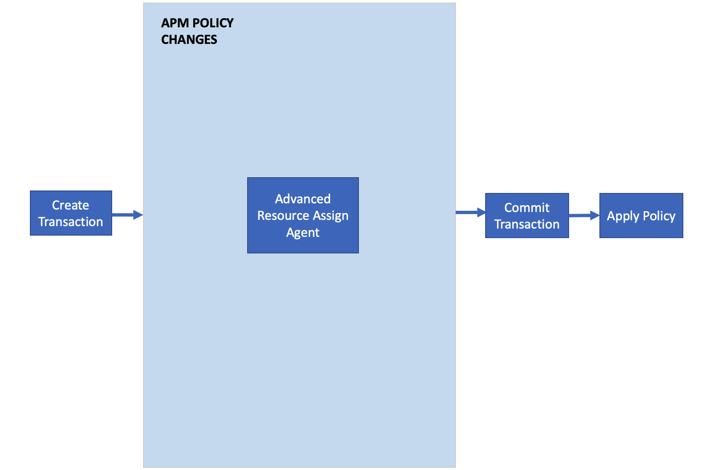
Access Lab Environment¶
To access your dedicated student lab environment, you will need a web browser and Remote Desktop Protocol (RDP) client software. The web browser will be used to access the Unified Demo Framework (UDF) Training Portal. The RDP client will be used to connect to the jumphost, where you will be able to access the BIG-IP management interfaces (HTTPS, SSH).
Click DEPLOYMENT located on the top left corner to display the environment
Click ACCESS next to jumphost.f5lab.local

Select your RDP resolution.
The RDP client on your local host establishes a RDP connection to the Jumphost.
Login with the following credentials:
- User: f5lab\user1
- Password: user1
Task 1 - Import Postman Collections¶
From the Jumpbox, open Postman via the desktop shortcut or toolbar at the bottom
Note
Dismiss any prompts to update Postman.

Click Yes if prompted for “Do you want to allow this app to make changes to your device?”

Click Import located on the top left of the Postman application
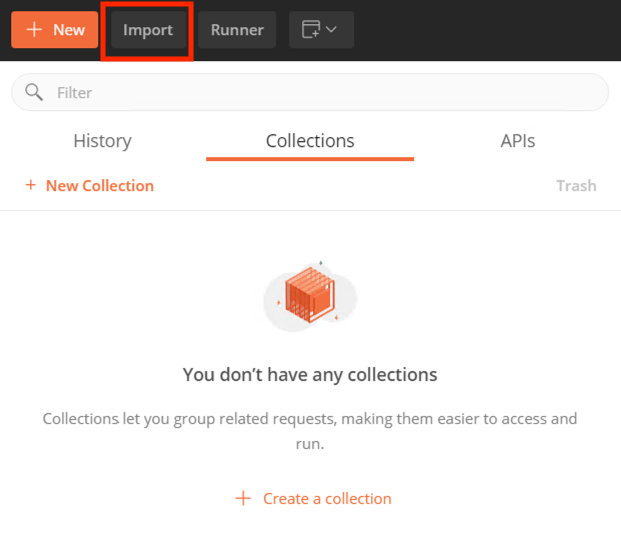
Click Upload Files

Navigate to C:\access-labs\class4\module2\student_files, select student-class4-module2-lab3.postman_collection.json, and click Open
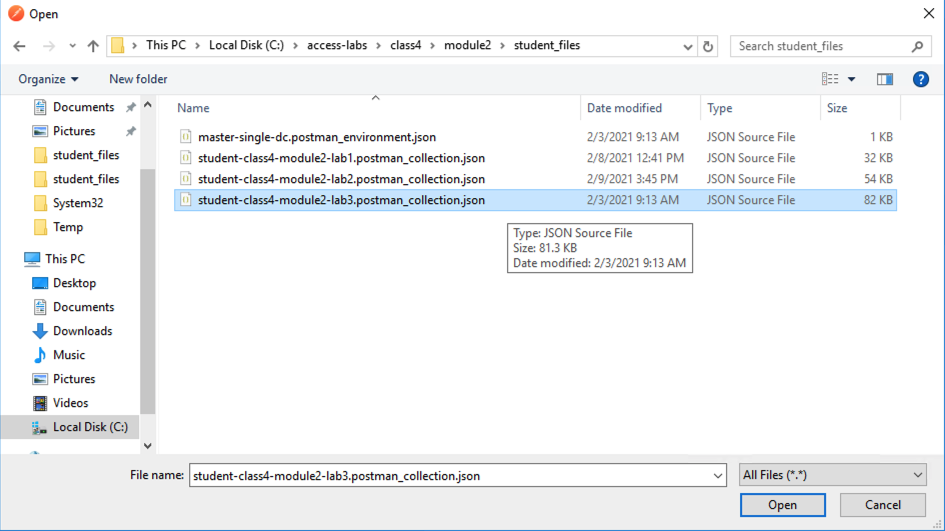
Click Import
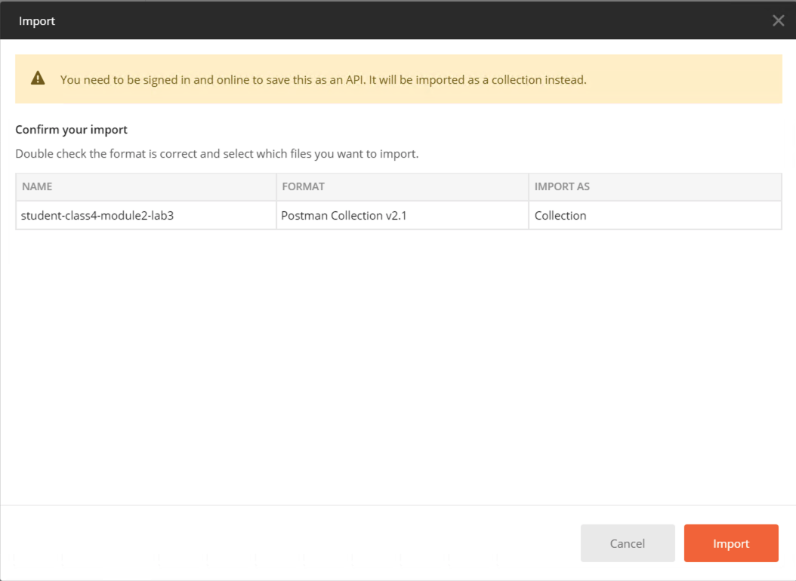
A collection called student-class4-module2-lab3 will appear on the left side in Postman
Task 2 - Create A Webtop Policy¶
Hover over the collection name student-class4-module2-lab3 with your mouse and click the Arrow icon.
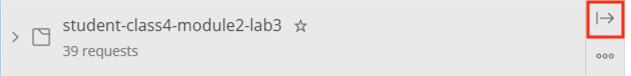
Click the Create Policy folder.
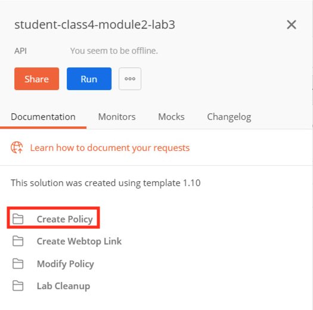
Click the blue Run button and Postman Runner will open.
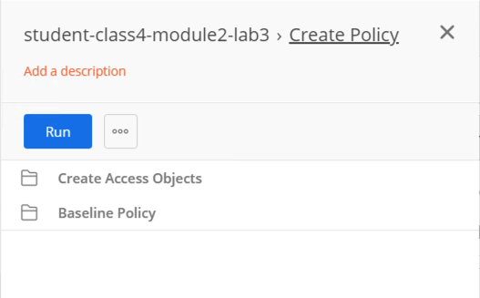
Click the blue button Run student-class… and the API requests will start being sent to the BIG-IP.
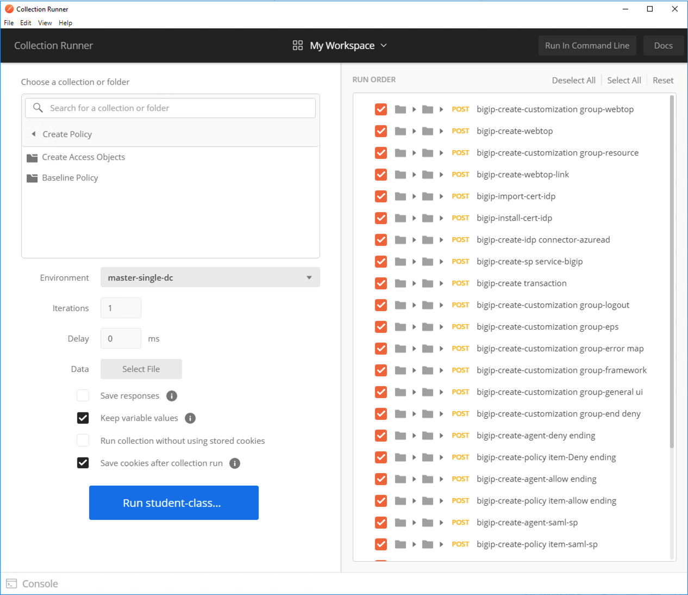
The Pass circle will display a value 10.
Close Runner by clicking the X in the top right corner.
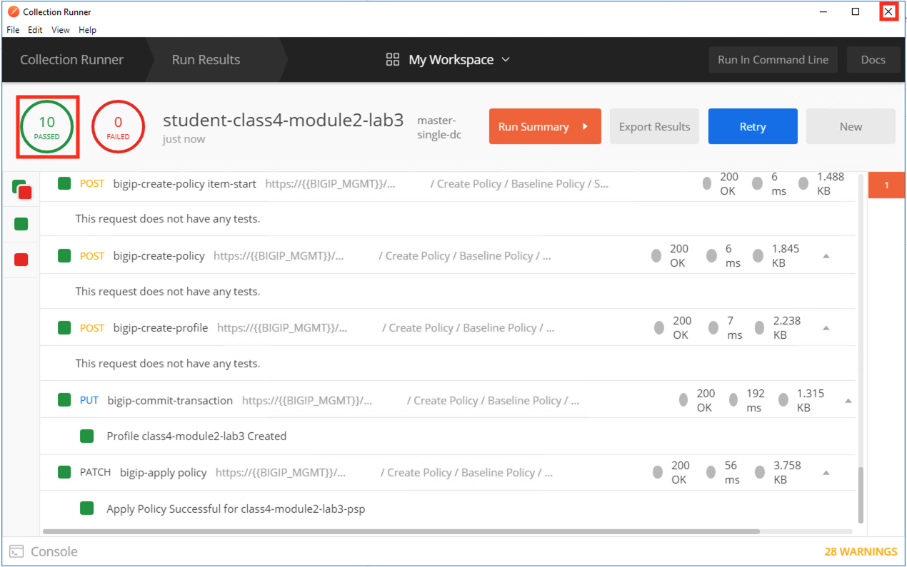
From the jumphost, ppen a browser and navigate to https://bigip1.f5lab.local
Login to the BIG-IP GUI with the following credentials:
- Username: admin
- Password: admin
Navigate to Access>>Profiles/Policies>>Access Profiles (Per-Session Policies). Do not click the + (plus symbol).

The policy class4-module2-lab3-psp you created via automation is displayed. Click Edit to view the policy in Visual Policy Editor(VPE).
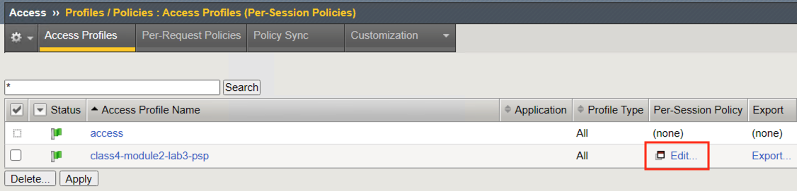
The policy was successfully deployed using SAML Authenticaiton and an Advanced Resource Assign. Click on the Advanced Resource Assign action.

The Advanced Resource Assign contains a webtop and a single webtop link.

Task 3 - Create a Webtop Link¶
From Postman, expand the student-class4-module2-lab3 collection and then the Create Webtop Link subfolder.
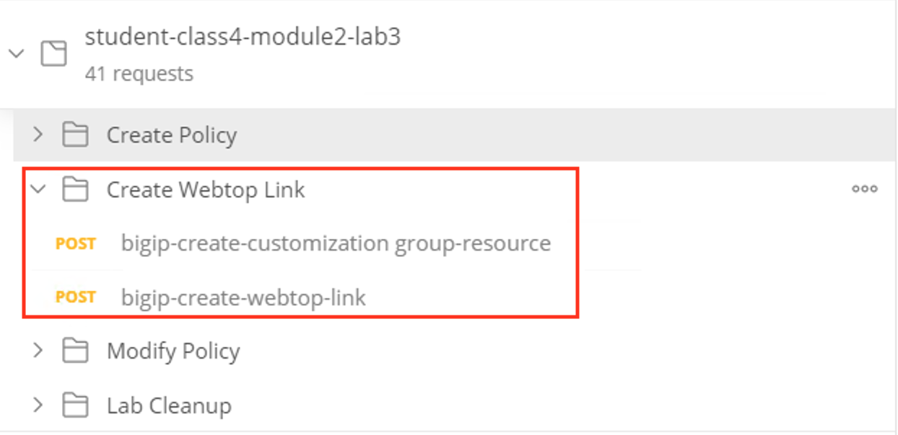
Click the request bigip-create-customization group-resource and then Body. The body of this request specifies that we will be creating a webtop link resource.
Note
One thing to note, all webtop link resources use “/Common/standard” as the source type even if the policy is using “/Common/Modern”.
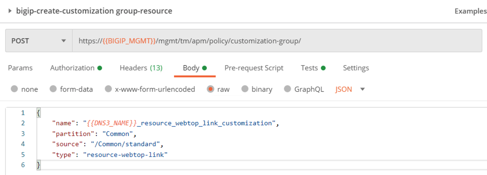
Click the blue send button in the upper right corner. You will receive a 200 OK status code with a response body. This is an indication that the customization group was created.
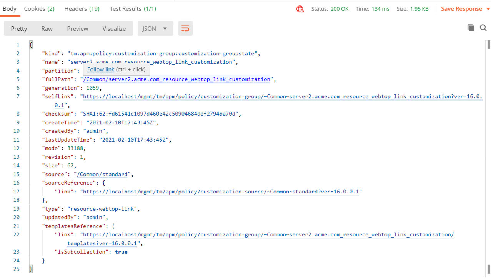
Click the request bigip-create-webtop-link and then Body. The body of this request creates the webtop link Resource. The applicationUri JSON key contains the resource destination. The Postman Variable ((DNS3_NAME)) is set to server2.acme.com
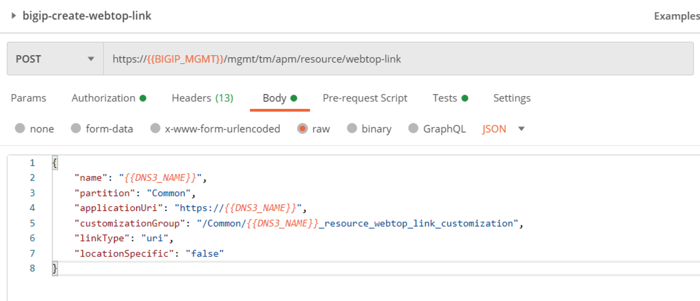
Click the blue send button in the upper right corner. You will receive a 200 OK status code with a response body. This is an indication that the webtop link resource was created.
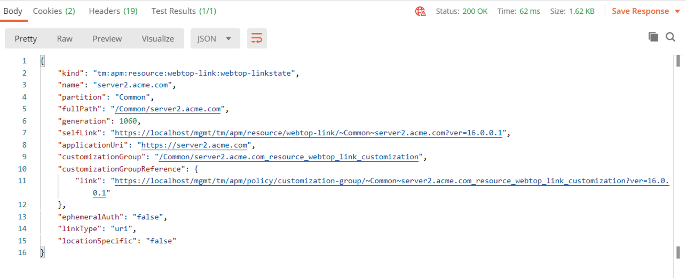
Task 4 - Add a webtop to an Advanced Resource Assign¶
Note
When creating or modifying a policy it must be performed within a transaction. A transaction occurs in multiple steps. First, you create the transaction by receiving a transaction ID from the BIG-IP. Next, you pass subsequent configuration requests that contain the transaction ID header to the BIG-IP. The BIG-IP does not process these requests. Instead it holds those requests until the transaction is commited in the final step. It’s important to understand that transactions have an all or nothing approach. Either every request in the transaction is processed sucessfully or none of the configuration changes are made. This is extremely important to ensure all the required information is there for building a working policy. To understand more about transactions please review The Explore the icontrolRest Endpoints of lab 1
Expand the Modify Policy folder. Since the only change to the policy is the addition of a single webtop link you will only review that single request. Expand the Modify Advanced Resource Assign subfolder.
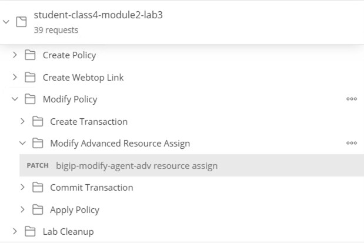
Click bigip-create-agent-adv resource assign and then Body.
The request method is a PATCH since the advanced resource assign agent exists. We do not want to create the agent, but modify an existing agent.
The request body is the same as the request used to create the advanced resource assign agent. The only difference is the addition of the new webtop resource.
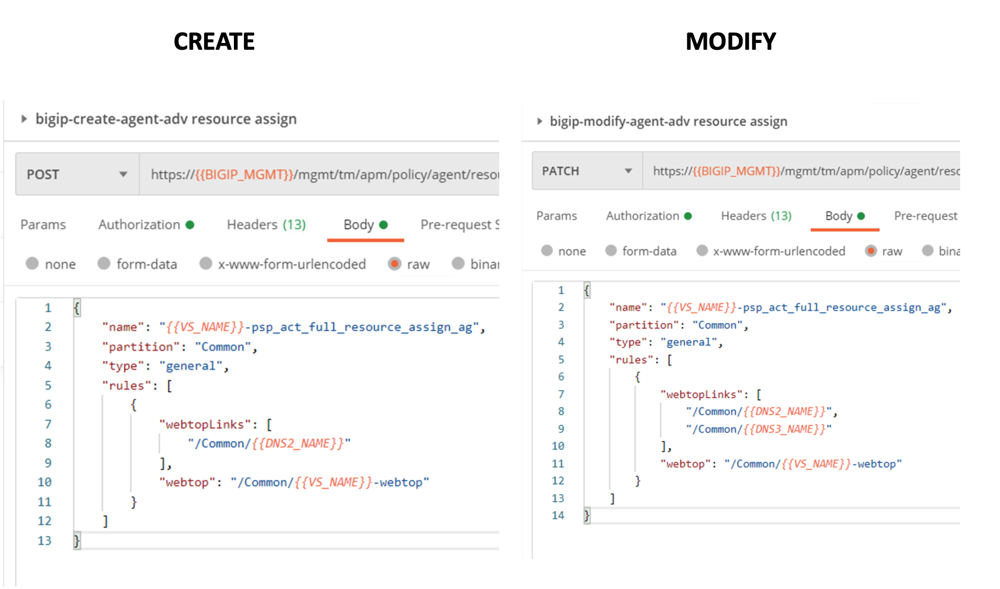
Hover over the Collection name student-class4-module2-lab3 with your mouse and click the Arrow icon.
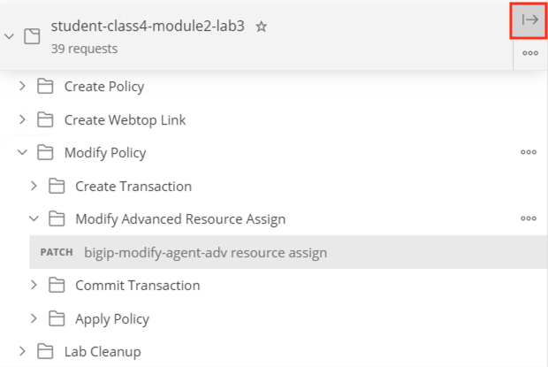
Click student-class4-module2-lab3 to return to the main folder if you are not already there.
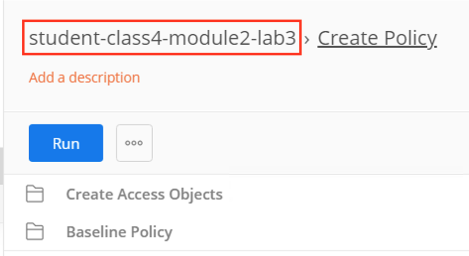
Click the Modify Policy folder. You will see four subfolders in the folder.

Click the blue Run button and Postman Runner will open.
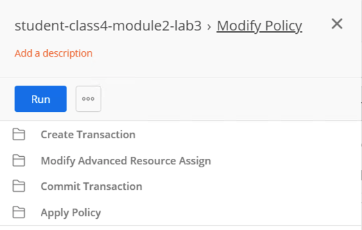
Click the blue button Run student-class… and the API requests will start being sent to the BIG-IP.
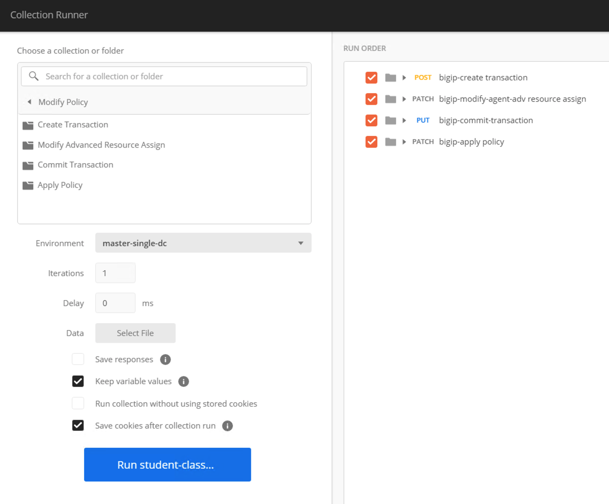
The Pass circle will display a value 2.
Close Runner by clicking the X in the top right corner.
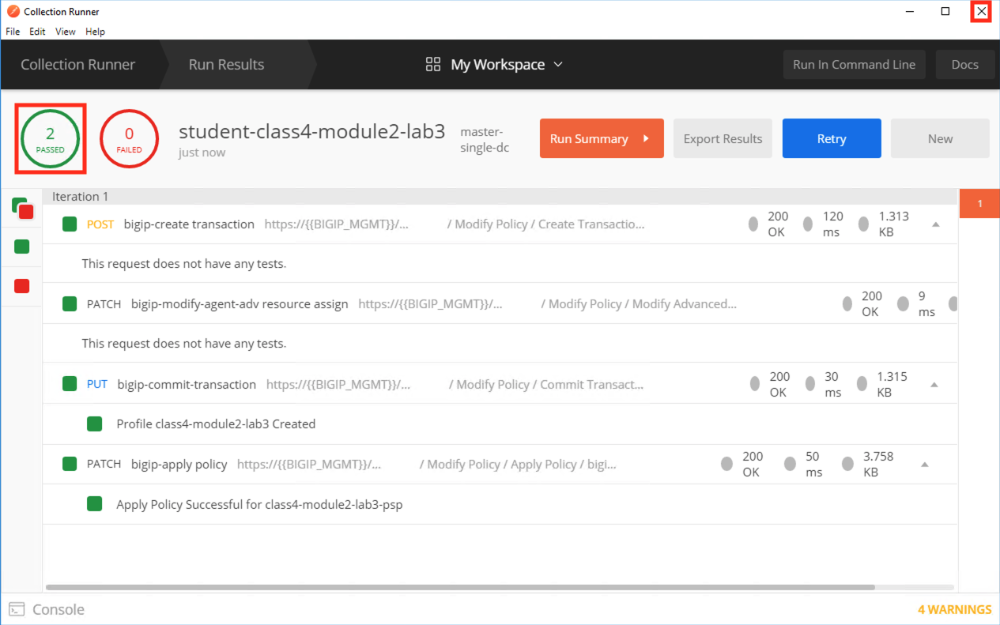
From the jumphost, open a browser and navigate to https://bigip1.f5lab.local
Login to the BIG-IP GUI with the following credentials:
- Username: admin
- Password: admin
Navigate to Access>>Profiles/Policies>>Access Profiles (Per-Session Policies). Do not click the + (plus symbol).
Click Edit to the right of class4-module2-lab3-psp to view the policy in Visual Policy Editor(VPE).
Click on the Advanced Resource Assign action to display the changes.
The Advanced Resource Assign now has two Webtop Links. If we wanted to remove the link we would simply send a new request using the PATCH method that didn’t contain the resource inside a transaction.
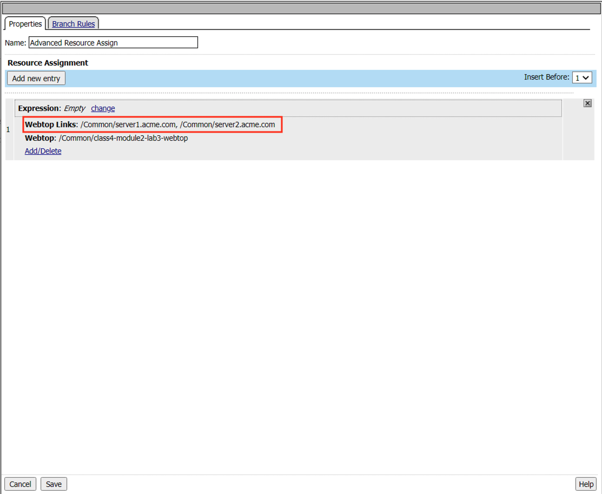
Task 4 - Lab Cleanup¶
Hover over the Collection name student-class4-module2-lab3 with your mouse and click the Arrow icon.
Click student-class4-module2-lab3 to return to the main folder if you are not already there.
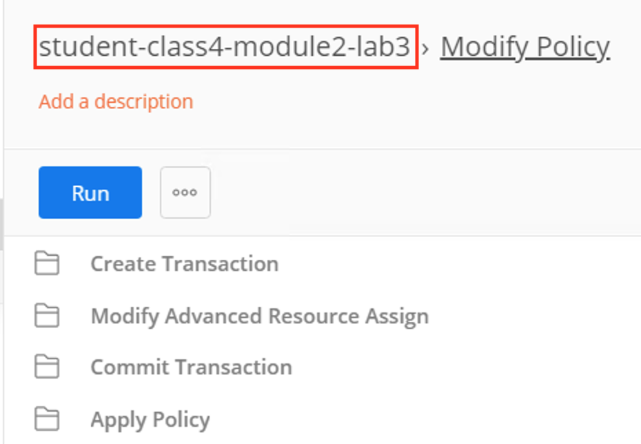
Click the Lab Cleanup folder.
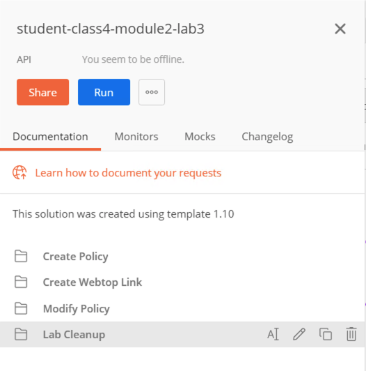
Click the blue Run button and Postman Runner will open.

Click the blue button Run student-class… and the API requests will start being sent to the BIG-IP.

The Pass circle will display a value 7.
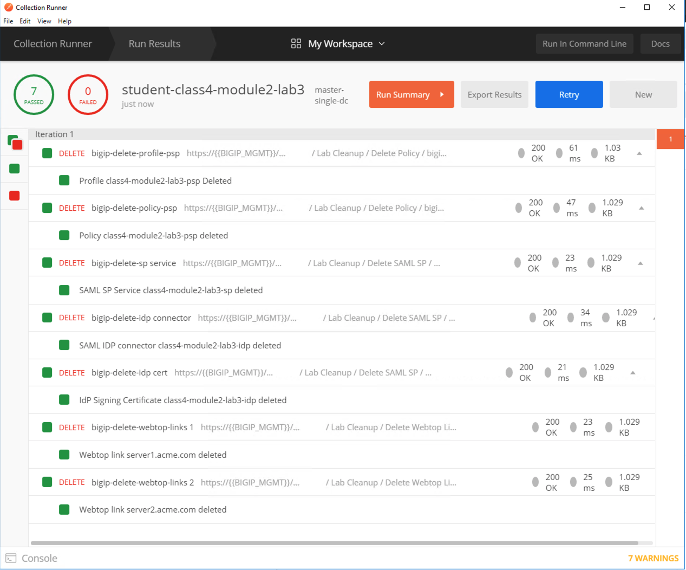
From Postman, Click the 3 dots on the bottom right of the student-class4-module2-lab3 Collection.
Click Delete
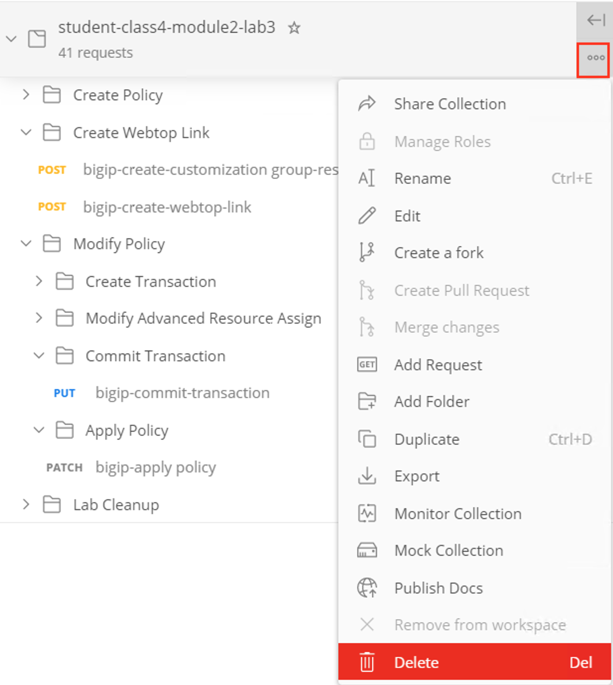
This concludes our lab on modifying a webtop via automation.